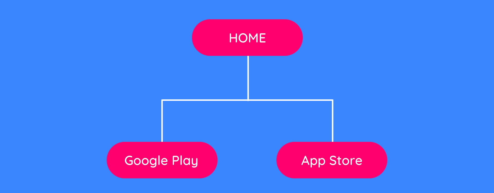
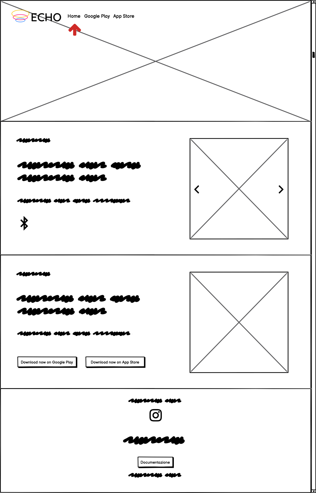
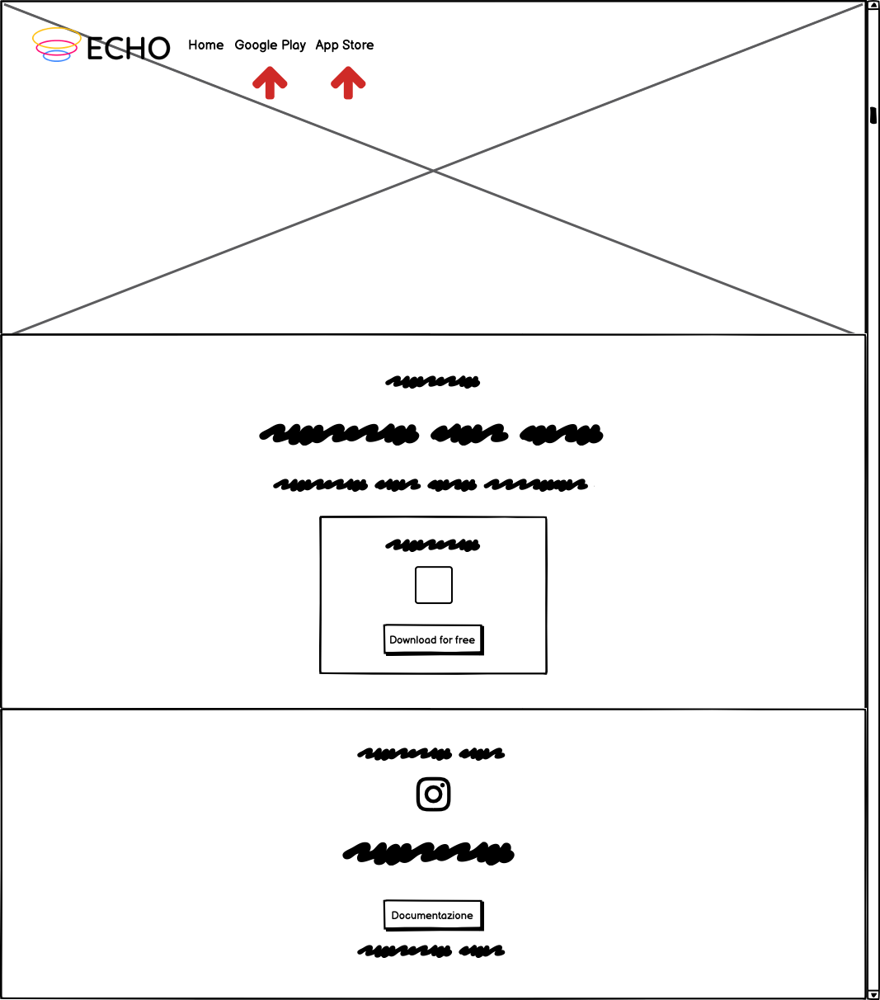
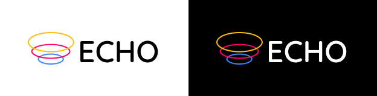
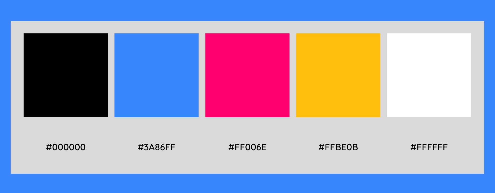

DOCUMENTAZIONE - PROJECT MANAGEMENT PLAN
Abstract
Il sito web di ECHO intende sia informare i possibili utenti interessati sia rendere veloce e accessibile il download dell'applicazione stessa. ECHO è un'app che permette ai propri utenti di soddisfare le loro curiosità riguardo ai brani che le persone circostanti stanno ascoltando. ECHO si rivolge ad un pubblico giovane (ma non necessariamente), curioso, amante della musica e della condivisione sociale.
Benchmarking
OBIETTIVI
Il sito web ha come obiettivo principale quello di promuovere l'app ECHO, informando i possibili utenti e permettendo un veloce collegamento ai principali store di applicazioni (Google Play e App Store).
TARGET UTENTE
Il target utente primario è costituito da: giovani under 30 o lavoratori (abituati a prendere i mezzi o a frequentare ambienti sociali affollati).
COMPETITORS
Non esistono veri e propri competitors, poiché non è mai stata proposta un'app che abbia le stesse funzioni di ECHO.
Esistono però dei siti web che promuovono app che potrebbero essere paragonate ad ECHO, poiché anch'esse applicazioni di ricerca musicale (sebbene adottino una modalità di ricerca diversa, ossia quella dell'ascolto e della successiva identificazione).
1) SHAZAM
2) MUSIXMATCH
Struttura e layout
ARCHITETTURA DEL SITO
1. Architettura del sito
WIREFRAME
 2. Wireframe HOME (2.1) e Wireframe Google Play/App Store (2.2)
LOOK AND FEEL
FONT: "Quicksand" (principale) e "DM Sans" (per qualche titolo)
Entrambe le font sono "sans serif", sono state infatti scelte per trasmettere "ordine" ed "essenzialità", e per rimanere in linea con le tradizionali font minimal associate alla modernità e al mondo del tech.
LOGO: Le "onde emesse" che costituiscono il logo riprendono: da un lato, la "sonorità" e la "musica", dall'altro, la "condivisione", quindi sintetizzano al meglio l'essenza di ECHO. Inoltre, i 3 colori di ciascuna onda compongono la palette colori del sito.
3. Logo
PALETTE: I 3 colori che costituiscono la palette sono stati scelti perchè catturano l'attenzione, sono "pop" e richiamano i 3 colori primari (quindi, ancora una volta, si è voluto ricercare l'essenzialità). Il bianco e il nero sono stati usati quasi esclusivamente per gli elementi testuali.
4. Palette colori
Linguaggi e strumenti
LINGUAGGI
Linguaggio di markup: HTML
Linguaggio per le grafiche web: CSS
Linguaggio di programmazione: JavaScript
STRUMENTI
Sublime Text (text editor)
Bootstrap: menù di navigazione, carosello immagini e bottoni
Coolors: palette colori
Google Fonts: font
Font Awesome: icone
Figma: logo
Canva: immagini e mockup
Balsamiq: wireframe
Github: pubblicazione
Instagram: promozione
DOCUMENTAZIONE - COMMUNICATION STRATEGY
Background
Il sito web di ECHO intende sia informare i possibili utenti interessati sia rendere veloce e accessibile il download dell'applicazione stessa. ECHO è un'app che permette ai propri utenti di soddisfare le loro curiosità riguardo ai brani che le persone circostanti stanno ascoltando. ECHO si rivolge ad un pubblico giovane (ma non necessariamente), curioso, amante della musica e della condivisione sociale.
Obiettivi comunicativi
Il sito web di ECHO intende sia informare i possibili utenti interessati sia rendere veloce e accessibile il download dell'applicazione stessa. ECHO è un'app che permette ai propri utenti di soddisfare le loro curiosità riguardo ai brani che le persone circostanti stanno ascoltando. ECHO si rivolge ad un pubblico giovane (ma non necessariamente), curioso, amante della musica e della condivisione sociale.
Target audience e messaggio
A CHI SI RIVOLGE IL SITO?
Il sito web di ECHO intende sia informare i possibili utenti interessati sia rendere veloce e accessibile il download dell'applicazione stessa. ECHO è un'app che permette ai propri utenti di soddisfare le loro curiosità riguardo ai brani che le persone circostanti stanno ascoltando. ECHO si rivolge ad un pubblico giovane (ma non necessariamente), curioso, amante della musica e della condivisione sociale.
QUALE MESSAGGIO TRASMETTE IL SITO?
Il sito web di ECHO intende sia informare i possibili utenti interessati sia rendere veloce e accessibile il download dell'applicazione stessa. ECHO è un'app che permette ai propri utenti di soddisfare le loro curiosità riguardo ai brani che le persone circostanti stanno ascoltando. ECHO si rivolge ad un pubblico giovane (ma non necessariamente), curioso, amante della musica e della condivisione sociale.
Promozione
Il sito web di ECHO intende sia informare i possibili utenti interessati sia rendere veloce e accessibile il download dell'applicazione stessa. ECHO è un'app che permette ai propri utenti di soddisfare le loro curiosità riguardo ai brani che le persone circostanti stanno ascoltando. ECHO si rivolge ad un pubblico giovane (ma non necessariamente), curioso, amante della musica e della condivisione sociale.
Valutazione dei risultati
Il sito web di ECHO intende sia informare i possibili utenti interessati sia rendere veloce e accessibile il download dell'applicazione stessa. ECHO è un'app che permette ai propri utenti di soddisfare le loro curiosità riguardo ai brani che le persone circostanti stanno ascoltando. ECHO si rivolge ad un pubblico giovane (ma non necessariamente), curioso, amante della musica e della condivisione sociale.